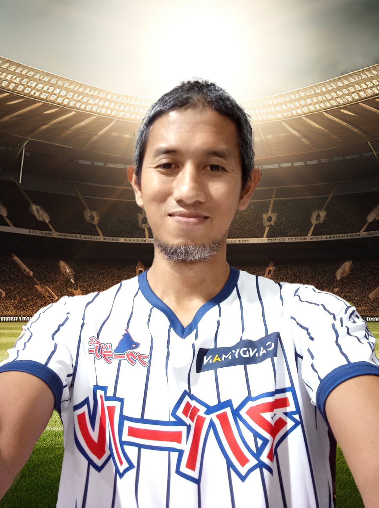

Curriculum Vitae

Julian Ibrahim
Alamat : Jl. Cemara No 79 Bandung
No Hp : 0811225570
Tempat/tgl lahir : Bandung, 23 Mei 1990
Hobi : Olahraga
Riwayat Pendidikan
- SDN Kemala Cerah
- SMPN 120
- SMAK 45
- Universitas Teknologi Nasional jurusan Ilmu Bahasa Jawa
Riwayat Organisasi
- Ketua Koperasi SMPN 120
- Ketua Softball SMAK 45
- Wakil Ketua HOKI UTN
- Ketua Penyelenggara lari lintas alam
Pengalaman Kerja
Desain Grafis di PT Elang Abadi
Desain Grafis di RS Cipta Sakti
Manager Toko di toko Pasti Laku
Keahlian
- Bahasa Inggris
- Software grafis komputer
- Modeling 3D
- Editing Film